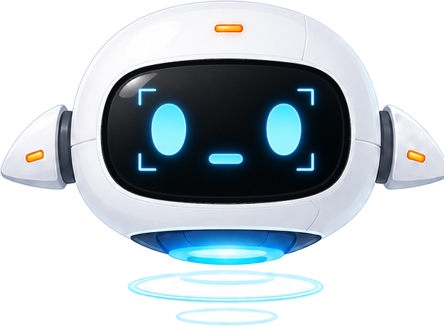
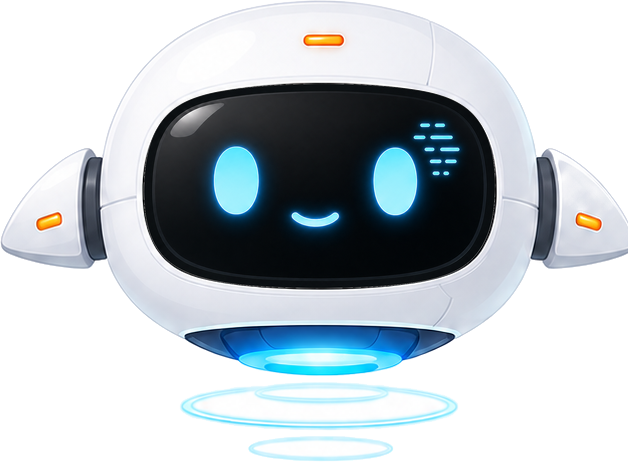

Local Window Copilot
一个运行在 Windows 本地的桌面 Agent：后台将窗口截图转成可检索的结构化观察，前台由 ChatAgent 编排会话、profile 与记忆检索，在用户提问时通过 memory.search(query) 调取相关上下文并给出可追溯回答。

Current Direction
围绕桌面 Agent 的上下文系统重构
当前主线把桌宠、观察引擎、ChatAgent 和调试台组合成一套本地 Agent 运行时。桌宠负责低打扰交互，观察线持续沉淀窗口事实，对话线在 probe→stream 流程中决定何时检索记忆，WebUI 则把截图、原始 JSON、工具 trace 和 runtime event 展开，方便复盘每一次回答的上下文来源。
桌宠用 Idle、Observing、Analyzing、Privacy、Error 等状态表达运行节奏，把交互反馈压缩成轻量但清晰的存在感。
ChatAgent 将 system、profile、会话历史和工具证据分层组织，让模型在正确阶段拿到正确上下文。
memory.search(query) 汇总窗口观察、短期记忆、profile 和跨会话对话记录，并返回带 source 与 record_id 的证据。
Tech Stack
技术栈与运行时
Python 3.13 · FastAPI · SQLite (RuntimeStore + FTS5) · uvicorn
llama.cpp (llama-server) · MiniCPM-V 4.6 (F16.gguf) · 256K context · 本地 GPU 推理
原生 HTML/CSS/JS · Windows 透明置顶悬浮窗 · SSE 流式对话
SQLite FTS5 + BM25 · bigram 中文双字滑窗分词 · 跨会话对话索引
pytest · 55 单元测试覆盖 probe→stream、FTS5 排名、状态重置、工具调用循环
Spec-driven 开发：context_observation_tool_mainline_spec_zh.md 驱动所有改动
Architecture
三条线：观察、对话、调试
系统按 Agent 运行时拆成三条协作链路：观察线把窗口状态转成可检索证据，对话线负责问题理解、工具选择和流式回答，WebUI 调试线展示每次观察、检索和生成过程。
观察线
静默截图 → VLM 结构化分析 → SQLite 存储，持续把窗口状态沉淀为可检索证据。
window:latest_analysis + window:summaries对话线
probe → stream(+可循环) 架构，ChatAgent 在回答前完成工具选择、证据读取和上下文组装。
memory.search(query)调试线
所有观察、截图、工具轨迹、运行日志可检查、可复盘、可清理。
RuntimeStore / SQLite
FTS5 BM25 (bigram)
probe→stream 职责分离
prefix cache 冻结快照
跨会话对话检索
transient state reset
Mascot States
桌宠状态承载 Agent 运行节奏
桌宠状态把后台链路可视化成用户能理解的轻量反馈：空闲时保持陪伴，窗口变化时进入观察，用户提问时进入分析，隐私和错误状态也都有明确表达。
Idle
轻微呼吸，保持低打扰陪伴。

Observing 注意到窗口变化，生成后台观察证据。
Analyzing 用户邀请时认真分析当前问题。Implementation
已落地的核心工程
核心工程集中在四个部分：Agent 决策循环、上下文包组织、记忆检索和本地运行时。FastAPI 提供 API 与 SSE，对话由 ChatAgent 编排，SQLite RuntimeStore 统一保存窗口观察、会话、profile、工具 trace 与 FTS5 索引，llama.cpp + MiniCPM-V 负责本地推理。
probe 阶段只决策是否调工具，content 一律丢弃；stream 阶段携带 tools，支持流式工具调用循环。解决小 VLM function calling 不稳定问题。
memory.search 从 RuntimeStore 聚合窗口观察、短期记忆、profile 和历史对话，再用 FTS5 + BM25 排名，中文 bigram 分词，毫秒级返回候选证据。
会话级冻结 profile_packet 字符串，保证 system+profile 前缀字节级一致，llama.cpp KV cache 稳定命中，首 token 延迟降低 30-60%。
对话结束写入持久 FTS5 表，memory.search 候选集覆盖历史会话，让 Agent 能在新会话中找回之前讨论过的任务、结论和偏好。
精简 VLM 观察 prompt 字段密度至模型稳定输出范围，max_tokens 回归 8192。成功率从 54% 提升到 80%。
观察存储、运行日志、工具 trace、profile 可视化。调试台支持清理对话、观察、记忆、日志和 FTS5 索引，便于压测和回归。
Engineering Data
修复前后的关键数据
所有指标来自 SQLite runtime.sqlite3 的实际运行记录，用于追踪每轮优化是否真的改善 Agent 链路。
Mainline Contract
Agent 上下文进入模型的方式
观察线 target window screenshot -> VLM structured observation -> window:latest_analysis -> window:summaries -> screenshot PNG 对话线 user question + profile + session history -> model decides whether to call memory.search(query) -> evidence records with source / record_id -> final answer 调试线 WebUI shows raw observation fields, screenshot thumbnails and tool traces.
memory.search(query) 负责检索窗口观察、短期记忆、profile 和历史对话证据。
system、profile、session history、evidence records 按职责进入模型，动态证据通过工具结果注入。
Agent 聚焦观察、陪伴、解释、建议和记录；点击、输入、提交等高影响动作保留给用户确认。
Roadmap
已完成与下一步
prompt 契约精简至模型稳定输出范围，max_tokens 回归 8192，成功率 54%→80%。
FTS5 BM25 替代 VLM ranker，memory.search 零失败；probe→stream 职责分离 + 流式工具调用循环。
会话级冻结 profile 快照，llama.cpp KV cache 稳定命中。跨会话 FTS5 对话检索已落地。
按 token 预算压缩 evidence records，让 memory.search 结果更适合进入流式回答阶段。